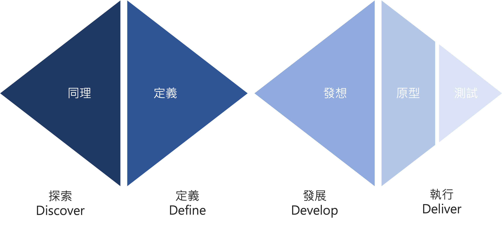

Previous slide Next slide Toggle fullscreen Open presenter view
創意發想的技巧
「創意九思流」將創意發想拆解為 「高感知能力」與「高聯想能力」 兩大維度，協助從不同視角切入，產出具有市場價值的創新方案。
核心維度一：培養「高感知能力」
核心維度二：培養「高聯想能力」
高感知能力：觀察
細查行為，找出摩擦點。不聽對方說什麼，而是看對方做什麼。
應用場景：餐廳的排隊與結帳流程。
範例細節：老闆發現客人進店前會不斷張望店內，或是在結帳時手忙腳亂地找零錢。雖然客人口頭上說「沒關係，慢慢來」，但老闆觀察 到客人結帳時若要同時拿手機掃碼、拿錢包、拿提袋，會導致動作卡頓與後方焦慮。
洞察結果：在櫃檯增加「掛勾」與「掃碼提示架」，減少動作摩擦。
高感知能力：問題
主動訪談，挖掘深層需求。透過高品質提問 ，找出不滿意的根源。
應用場景：企業軟體開發或產品訪談。
範例細節：用戶抱怨「這個功能很難用」，PM 不直接修改功能，而是透過高品質提問 ：「你通常在哪個時間點使用這項功能？」、「如果這個按鈕消失了，你的工作會如何被影響？」。
洞察結果：發現用戶其實不需要該功能，只是因為舊系統流程強迫他們進行這一步，進而找出簡化整個系統架構的機會。
高感知能力：兒童
保持童心，化繁為簡。用好奇的眼光打破成見，發現讓過程充滿樂趣的方法。
應用場景： 醫療環境的改善。
範例細節： 核磁共振（MRI）機器對孩童來說既冰冷又恐怖，成人常規思考是「縮短時間」。但若以兒童視角出發 ，將檢查室佈置成「太空冒險」或「森林探險」，機器轉動的聲音變成「太空船升空的引擎聲」。
洞察結果： 孩子不再抗拒檢查，甚至覺得是在玩遊戲，顯著降低了因掙扎導致的重照率。
高感知能力：破框
挑戰常規，質疑不合理。思考「為什麼一定要這樣？」並打破 SOP。
應用場景：傳統產業的招募與管理 SOP。
範例細節：許多公司規定「必須在辦公室工作以維持效率」。主管挑戰常規 質疑：「如果溝通是核心，那一定要坐在一起嗎？」他打破了朝九晚五的框框，改採「成果導向」與「異地協作」。
洞察結果：吸引了更多需要彈性時間的高端人才，且公司省下了高額的辦公室租賃成本，產出不減反增。
總結：
高聯想能力：組合
概念：將兩個原本獨立的產品或服務 A + B，創造出 1 + 1 > 2 的價值。
應用範例：健身房 + 托兒服務 (Kids' Club)
策略分析：許多年輕父母因為無人照顧小孩而放棄運動。將「健身空間」與「專業托兒」組合，解決了目標族群的痛點。
價值：父母能安心運動（增加留存率），健身房則開拓了家庭客群，創造出比單純健身房更高的附加價值。
高聯想能力：消除
概念：透過減法達到極致化，去除冗餘以聚焦核心功能。
應用範例：無印良品 (MUJI) 的無標籤化與簡約設計
策略分析：思考「如果拿掉品牌 Logo、多餘的染色與花俏包裝，會更純粹嗎？」。
價值：消除過度包裝與裝飾，反而突顯了產品的機能美與環保理念，讓消費者能以更合理的價格買到高品質的「本質」。
高聯想能力：改變
概念：調整現有的流程、時間點或互動形式。
應用範例：預防性醫療（從「生病看診」到「生理數據監測」）
策略分析：將「感到不適才去醫院」的被動模式，調整為透過穿戴裝置（如 Apple Watch）主動提醒心率異常。
價值：將醫療行為從「治療」提前到「預防」，徹底改變了健康管理的互動時間點。
高聯想能力：反向
概念：顛覆傳統順序，或將結果與過程倒置。
策略：提倡參與感。例如：將完成品家具拆解為 DIY 模組，讓消費者在組裝過程中獲得成就感與情感連結。
應用範例：盲盒行銷
策略分析：傳統消費是「先看中款式再買」；盲盒則是「先付錢，拆開後才知道買到什麼」。將結果（獲得產品）與過程（揭曉驚喜）的心理順序倒置。
價值：創造了強烈的期待感與蒐集慾，讓購買行為本身變成一種充滿情緒價值的「娛樂體驗」。
高聯想能力：借用
概念：跨界槓桿，利用異業的資源、品牌或技術。
應用範例：便利商店借用「銀行櫃員機與包裹寄送」系統
策略分析：超商不再只賣零食，而是借用物流業與金融業的服務功能，將自己變成一個社區生活節點。
價值：透過異業服務的導入，大幅提升了消費者的進店頻率，並在既有的空間內建立了全方位的服務生態圈。
應用小撇步：
HW02 創意發想練習
使用 FigJam 進行創意發想練習，實作一個創意九思流模組看板。
設計思考的背景
在著手開發新產品或策劃新專案時，你會如何規劃？
許多大型企業與新創公司（如 Netflix、UberEats 等）已紛紛導入由 IDEO 所提倡的 「設計思考」（Design Thinking）
什麼是設計思考？
設計思考（Design Thinking）是一種「以人為本」的創意問題解決方法論，核心在於透過深入瞭解人的需求，為複雜議題尋求創新的解決方案。
它將「設計」的範疇從傳統的美學視覺（如海報、Logo）擴展至廣義的「解決問題」。
由美國知名設計公司 IDEO 的創辦人 David Kelley 所整合發想，並在史丹佛大學建立其學術地位。
設計思考的發展大事記
設計思考的演進歷程反映了其從學術理論走向商業應用，再進入教育與社會創新領域的過程：
1969年：Herbert Simon 發表《人工科學》（The Sciences of the Artificial），將設計視為一種解決問題的方法，而非單純的造型修飾。
1990年：美國設計公司 IDEO 正式定義設計思考為一個可操作的系統流程與創新工具，並強調「跨領域」與「以人為本」的核心價值。
1992年：Richard Buchanan 發表《設計思維中的棘手問題》（Wicked Problems on Design Thinking），主張利用設計解決難纏的挑戰。
設計思考的發展大事記
2004年：David Kelley 在史丹佛大學創立 d.school，將設計思考轉化為學術課程，影響全球教育。
2004年：英國設計協會（British Design Council）提出「雙鑽石模型」（Double Diamond Diagram）。
2008年：IDEO 執行長 Tim Brown 系統性地確立了目前廣為流傳的五大步驟，並發表經典著作《設計思考改造世界》（Change by Design）。
設計思考的核心定義
以人為本：所有的產品、服務或空間最終都是為了服務人類。設計思考強調從使用者的需求出發，深入了解其行為背後的動機、情緒與感受。
解決模糊問題：該方法論特別適合處理真實世界中「模糊」且「沒有標準答案」的挑戰，即那些問題本身難以掌握、無法立即找到切入點的情況。
跨領域協作：現實問題通常具備跨領域特性（如醫療結合資訊、人文結合工程）。設計思考提供了一套共同語言，讓不同專業背景的人員能放下成見，有效溝通與提案。
設計思考的關鍵心態
以人為本：解決問題的起點是「人的感受」，而非「產品功能」。
快速試錯：寧可在前期利用低成本的原型發現錯誤，也不要等到產品上市後才大幅修正。
動手思考：與其一直開會討論，不如先動手做個簡單的東西出來。
迭代優化：解決問題不是一次性的，而是透過不斷的「測試－修正」趨向完美。
案例一：Embrace 嬰兒保溫袋
從矽谷到偏鄉：挽救百萬生命的「三十七度」溫暖
從「廉價產品」到「適當解決方案」的思維轉變 / 同理心在跨文化設計中的關鍵作用
背景：極端環境下的設計挑戰
問題現狀：每年有 400 萬名新生兒死於失溫。
目標：設計一個成本僅需傳統保溫箱 1%（約 200 美元）的設備。
初步假設：問題在於「昂貴的材料」。
關鍵洞察：問題重構
實地觀察：尼泊爾醫院的昂貴保溫箱大多是空的。
深層原因：
早產兒多出生於偏遠農村。
母親無法負擔交通費，且需操持家務。
思維轉換：
原本：設計「廉價的醫院保溫箱」
轉向：設計「無需電力、可移動、農村可操作」的方案。
解決方案：科技睡袋
核心技術：相變材料 (Phase Change Material, PCM)。
物理特性：
石蠟加熱熔化後，能穩定維持在
持續供熱 4 至 6 小時。
設計優勢：像睡袋一樣簡單、不依賴電力、可攜帶。
同理心：消除文化障礙
文化衝突：母親們擔心西藥太強（習慣減半藥量），同樣擔心
設計決策：去數位化
取消溫度數字顯示。
改用「笑臉」標誌。
笑臉亮起 = 安全。
價值：降低使用門檻，建立使用者的安全感。
成果與影響：三十七度的勝利
覆蓋範圍：超過 25 個國家。
生命挽救：逾 100 萬名新生兒。
設計思考的核心：這不僅是技術的勝利，更是將同理心發揮到極致的成果。
案例二：LifeStraw 生命吸管
極簡主義的生存哲學：一根吸管掀起的全球飲水革命
極致的「技術極簡主義」 / 直覺設計如何引發全球飲水革命 / 社會企業的永續商業模式
背景：飲水安全與世紀災難
恐怖威脅：幾內亞龍線蟲病 (Guinea Worm Disease)。
感染路徑：飲用一口受污染的池水。
後果：一公尺長的寄生蟲在皮下鑽出，長達一年的失能。
設計邏輯：極致的「技術極簡主義」。
演進路徑：從過濾器到全球工具
1994年：與卡特中心合作，初步過濾幾內亞龍線蟲幼蟲（簡易不鏽鋼網）。
2005年：演進版個人用 LifeStraw。
技術核心：中空纖維膜技術 (
效能：攔截 99.9999% 的細菌與 99.9% 的寄生蟲。
設計哲學：「直覺」是最好的設計
情境背景：災難現場、偏遠地區缺乏複雜的說明書與電力。
核心競爭力：即插即用 (Plug & Play)
無需電力、無移動零件。
不添加化學藥劑。
吸吮即可飲用。
應用：海地地震、巴基斯坦洪災等緊急人道救援。
商業模式：社會企業的典範
身分：認證 B 型企業。
回饋計畫 (Give Back Program)：
「買一捐一」邏輯。
賣出一根吸管，利潤就會資助一名非洲孩童一整年的安全飲水。
成就：
截至 2023 年，覆蓋 960 萬名孩童。
幾內亞龍線蟲病例：從 350 萬例降至 13 例。
總結：設計思考的社會價值
問題重構：看見問題背後的問題（例如：保溫箱的問題不在成本，在地理距離）。
極簡主義：好的設計往往是「減法」，讓操作趨近於直覺。
同理心轉譯：將冷冰冰的數據與技術，轉化為溫暖的「笑臉」與簡單的「吸管」。
當設計能解決人類最基本的生存尊嚴時，它所釋放的社會影響力將是無遠弗屆的。
第一顆鑽石：找到正確的問題 (Finding the Right Problem)
這部分的重點在於深入研究並釐清問題的核心。
探索（Discover）— 發散思考
目的：盡可能地收集資訊、觀察使用者需求並了解市場環境。
行動：進行使用者訪談、問卷調查、市場研究與實地觀察。此階段不預設任何限制，鼓勵吸收大量的資訊。
定義（Define）— 收斂思考
目的：從探索階段獲得的大量資訊中，篩選、歸納出最核心的痛點。
行動：建立人物誌（Personas）、繪製使用者旅程圖（User Journey Maps），並最終撰寫出清晰的「問題陳述」（Problem Statement），確認團隊要解決的具體目標。
第二顆鑽石：找到正確的解答 (Finding the Right Solution)
一旦明確了問題，接下來就是開發出最佳的解決方案。
開發（Develop）— 發散思考
目的：針對定義好的問題，腦力激盪出各種可能的解決方法。
行動：進行腦力激盪（Brainstorming）、快速原型製作（Prototyping）與初步的使用者測試。這個階段鼓勵「失敗要快」，透過多次嘗試來挖掘潛在的創意。
交付（Deliver）— 收斂思考
目的：選擇最可行的方案進行最後的完善、測試與實施。
行動：進行高保真原型測試、修正細節，並最終將產品或服務推向市場。
設計思考的流程（Stanford d.school）
設計思考的步驟
設計思考的流程：同理 Empathize
設計思考的第一步，也是最重要的一步。目標是放下自己的成見，深入了解使用者的需求、情感與痛點。
關鍵思維：透過實際走訪使用者的生活環境，了解他們「為什麼」這樣做，而不僅僅是聽他們「說」什麼。
設計思考的流程：定義 Define
在收集了大量資訊後，需要將零散的觀察轉化為明確的問題陳述，這也被稱為「觀點」（Point of View, POV）。
關鍵思維：確保你正在解決的是「真正的問題」，而非表面症狀。一個好的問題定義通常遵循這個格式：「[特定使用者] 需要 [某種需求]，因為 [出人意料的洞察]。」
雙鑽石模型與設計思考流程的關係

HW03 FigJam 合作創意發想
課堂上，我們上課氣氛都不熱絡，怎麼辦？
【解說腳本】
首先，我們來看看第一個案例：Embrace。它的故事被譽為設計思考界最溫暖的範例。這個計畫的起點不是實驗室，而是遙遠的、充滿泥土香氣的村落。
【解說腳本】
第二個案例則是 LifeStraw，我們將分析它如何運用「極簡設計」讓產品在缺乏教育資源的災區也能直覺使用，並了解其背後的 B 型企業運作邏輯。
【解說腳本】
1994 年，史丹佛大學的四位學生接下了一個極端挑戰。在非洲、印度等地，早產兒失溫致死的問題非常嚴重。當時的設計重點被設定在「成本」，團隊最初的目標是研發一種便宜的保溫箱，因為醫院裡那些動輒兩萬美金的精密設備，對於資源匱乏地區來說根本是遙不可及的夢想。
【解說腳本】
然而，當團隊成員 Jane Chen 實地走訪尼泊爾時，他發現了一個讓他震驚的現象：城市醫院裡的先進保溫箱竟然很多是空的！為什麼？透過深度訪談，他們挖掘出真相：即使醫院有設備，偏遠山區的母親根本付不起路費，也無法離開家裡的農活。關鍵並非「廉價保溫箱」，而是如何將溫暖送到「家裡」。這就是設計思考中最重要的階段——「問題重構」。
【解說腳本】
基於新的問題定義，團隊設計出了這個「科技睡袋」。它運用了「相變材料（PCM）」，這種材料加熱後會像蠟一樣融化，並能長時間精確維持在對嬰兒最安全的 37 度。它不需要昂貴的電力系統，只需要熱水即可充能，這讓它能被帶回山區村落，真正解決了地理上的障礙。
【解說腳本】
在推廣初期，他們遇到了文化障礙。印度的母親們習慣將「強效西藥」減半使用，她們也同樣擔心 37 度過熱。這是一個關於「信任」的問題。團隊做了一個重要的去數位化決策：拿掉冰冷的溫度計數字，換成一個直觀的「笑臉」指示燈。只要看到笑臉，母親就知道是安全的。這種深度的文化同理心，才是這個產品成功的最後一哩路。
【解說腳本】
到今天為止，Embrace 已經在超過 25 個國家，挽救了超過 100 萬名嬰兒。這個案例告訴我們，最好的設計往往不是最尖端的尖端科技，而是能精準切中使用者生活脈絡，同時具備科學理性與人文溫度的解決方案。
【解說腳本】
第二個案例同樣是為了解決基本的生存威脅。我們來看看這根藍色吸管，它如何運用極致的極簡主義，在災難與資源匱乏地區發揮影響力。
【解說腳本】
第二個案例則是 LifeStraw，我們將分析它如何運用「極簡設計」讓產品在缺乏教育資源的災區也能直覺使用，並了解其背後的 B 型企業運作邏輯。
【解說腳本】
幾內亞龍線蟲病是很多發展中國家的噩夢。透過飲水感染後，寄生蟲會在人體內長到一公尺長，最後緩緩鑽出皮膚，造成極大的痛苦與失能。這不只是健康問題，更是勞動力受損導致的經濟貧困循環。要在沒有電力、沒有淨水設備的環境解決這個問題，需要的不是複雜的工程，而是「管用」的工具。
【解說腳本】
LifeStraw 經歷了漫長的演化。從最初的簡易過濾網，到現在精密的「中空纖維膜」。它能物理性攔截掉 99.99% 的細菌與寄生蟲，讓原本致命的髒水，經過濾後達到飲用標準。關鍵在於，技術被封裝在一個小小的管狀物體裡，極其輕便。
【解說腳本】
為什麼說它的設計很卓越？因為這根吸管符合人類的本能——「吸吮」。你不需要教災民如何啟動它，不需要電池，不需要加入化學藥片，只要有嘴巴就能喝到水。這種「負擔能力（Affordance）」極高的設計，讓它在海地大地震、巴基斯坦洪災中，成為救難人員唯一的救命稻草。
【解說腳本】
除了技術，LifeStraw 的商業模式也是永續的關鍵。它是一家「B 型企業」，在已開發國家銷售（如戶外登山市場）賺取的利潤，會拿來資助貧窮地區的「回饋計畫」。這種以商業力量帶動社會福祉的良性循環，讓幾內亞龍線蟲病在幾十年內，病例從 350 萬例下降到僅僅 13 例。這就是永續設計的力量。
【解說腳本】
總結今天的課程，我們可以發現：永續設計不僅僅是環保，更是關於「公平」與「解決問題」。掌握三個關鍵：第一，學會「問題重構」，找出表象下的真因。第二，擁抱「極簡主義」，讓產品變得無門檻且直覺。第三，透過「同理心轉譯」，讓技術變得有溫度。希望這兩個案例能啟發大家在期末專題中，也嘗試去挖掘那些尚未被滿足、隱身在角落的真實需求。
這是一個非線性、可隨時回溯的迭代過程。
1. 同理 (Empathize)：設身處地，挖掘使用者的真實需求與動機。
2. 定義 (Define)：聚焦痛點，用一句話精準釐清核心問題。
3. 發想 (Ideate)：天馬行空，不限可行性地產出大量創意。
4. 原型 (Prototype)：動手實作，以最低成本快速將想法具象化。
5. 測試 (Test)：實際試用，根據使用者回饋進行驗證與修正。